Nichts gefunden. Versuch ein anderes Wort – oder frag direkt nach, dann ergänzen wir die Hilfe.
1Erste Schritte
Konto einrichten, Browser wählen, Laser koppeln – danach kannst du messen.
Konto und Anmeldung
Trimwerk ist derzeit nur auf Einladung nutzbar. Du bekommst eine E-Mail mit einem Link.
Link in der Einladungs-E-Mail öffnen.
Auf der Startseite ein eigenes Passwort festlegen.
Ab jetzt meldest du dich auf trimwerk.app mit E-Mail und Passwort an.
Passwort vergessen? Auf der Startseite Passwort vergessen wählen – du bekommst einen Link zum Zurücksetzen.
Unter Berichte kannst du mit Name ändern festlegen, wie dich Freunde bei geteilten Kites sehen.
Deine Daten gehören dir. Kites, Messungen und Logbuch sieht nur dein Konto – außer du gibst etwas ausdrücklich frei (Freunde oder Käufer).
Passender Browser
Die Mess-App spricht über Bluetooth direkt mit dem Laser. Das können nicht alle Browser:
Android
Chrome
PC / Mac
Chrome oder Edge
iPhone / iPad
App „Bluefy“ aus dem App Store (Safari und Chrome auf dem iPhone können kein Bluetooth im Browser)
Berichte, Logbuch und Hilfe funktionieren in jedem Browser – nur das Messen mit Laser braucht einen der oben genannten.
App auf den Homescreen
Die Mess-App ist eine Web-App: Sie läuft im Browser, lässt sich aber wie eine normale App auf den Homescreen legen – mit Trimwerk-Symbol und ohne Adressleiste.
Android/Chrome:Mess-App öffnen → Menü ⋮ → Zum Startbildschirm hinzufügen bzw. App installieren.
PC/Chrome oder Edge: rechts in der Adressleiste auf das Installieren-Symbol klicken.
iPhone/Bluefy: Mess-App in Bluefy öffnen und als Lesezeichen bzw. auf den Home-Bildschirm legen.
Nach einem Update zeigt die App manchmal noch das alte Aussehen. Dann die App einmal ganz schließen und neu öffnen.
Laser verbinden
Getestet ist der Bosch GLM 50 C.
Laser einschalten und Bluetooth am Laser aktivieren.
In der App oben auf ● Laser tippen.
Im Auswahlfenster des Browsers den Laser wählen und Koppeln.
Der Punkt wird grün – jede Messung am Laser landet jetzt direkt im aktuellen Feld.
Taucht der Laser nicht auf: ⚙ → Laser suchen – alle Geräte anzeigen. Weitere Hilfe unter Probleme lösen.
Der Laser kann immer nur mit einem Gerät verbunden sein. Ist er noch mit der Bosch-App oder einem anderen Handy gekoppelt, findet ihn die Mess-App nicht.
Leine für Leine, links und rechts – die App führt dich durch alle Waageleinen und vergleicht sofort mit dem Leinenplan.
Kite wählen
Oben links auf den Kite-Namen tippen. Die Bibliothek enthält die Leinenpläne vieler Flysurfer-Modelle, sortiert nach Familie (Sonic, Soul, Peak …) und Größe.
Orange Größe = dein Kite, schon angelegt.
Graue Größe = nur Leinenplan. Zweimal tippen legt den Kite in deinem Konto an.
☆ Favoriten: häufig gemessene Kites oben anheften.
✎ Ergänzen: Was tun, wenn ein Modell oder eine Größe fehlt? (Leinenplan schicken, wer pflegt die Bibliothek …)
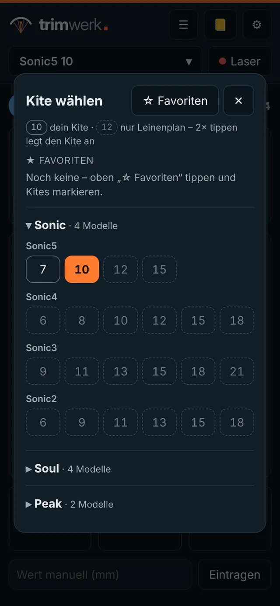
Kite-Auswahl mit Favoriten und Bibliothek
Ablauf einer Messung
Kite im Trimwerk bzw. Trimwerk Go einspannen und unter Zug setzen (siehe DIY-Anleitung).
Die App zeigt die aktuelle Leine groß an (z. B. a1), darunter Soll aus dem Leinenplan. Die Kite-Skizze zeigt, wo die Leine sitzt.
Laser auf die Zielscheibe richten und messen. Der Wert erscheint unter Gemessen, darunter die Abweichung zum Soll – grün, gelb oder rot je nach Toleranz.
Die App springt zur nächsten Leine (abschaltbar). Mit ◀ Zurück und Weiter ▶ wechselst du selbst.
Seite wechseln: auf LINKS ⇄ tippen. Oben rechts siehst du den Fortschritt, z. B. 31/47 · gesamt 30/94.
Jeder Wert wird sofort gespeichert. Ohne Netz merkt sich die App die Werte und schickt sie nach, sobald wieder Verbindung besteht – erkennbar an ⏳ … noch nicht gespeichert unten.
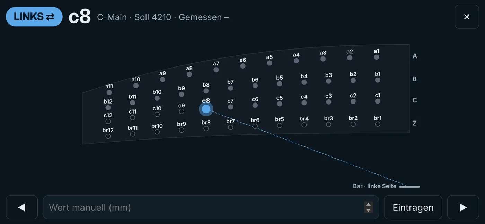
Mit ⤢ wird die Skizze zum Vollbild – praktisch quer am Handy oder am Tablet.
✎ Ergänzen: Deine Praxis-Tipps zum Ablauf – Reihenfolge, Zug/Last je Leine, wie lange eine komplette Messung dauert.
Korrigieren und von Hand eintragen
Rückgängig: Nach jeder Messung erscheint kurz Rückgängig – ein Tipp entfernt den letzten Wert.
✕ Löschen löscht den Wert der angezeigten Leine – zur Sicherheit zweimal tippen.
Schutz vor Überschreiben: Hat eine Leine schon einen Wert und weicht der neue um mehr als die Gelb-Toleranz ab (Voreinstellung 15 mm), fragt die App nach: Überschreiben oder Behalten. Kleine Abweichungen beim Nachmessen werden ohne Rückfrage übernommen. Abschaltbar in den Einstellungen.
Von Hand: Wert ins Feld Wert manuell (mm) tippen und Eintragen. Händische Werte werden nicht um den Laser-Offset korrigiert.
Neu messen: einfach zur Leine springen und nochmals messen – der alte Wert wird ersetzt.
Übersicht und Vergleich
☰ (oder Tipp auf den Leinennamen) öffnet die Übersicht aller Leinen mit Soll, links und rechts. Ein Tipp auf einen Wert springt zu dieser Leine.
Vergleich mit gesicherter Messreihe: Oben eine frühere Messreihe wählen – z. B. die Eingangsmessung vor dem Trimm. Die Werte stehen dann daneben, so siehst du direkt, was sich verändert hat.
Am großen Bildschirm öffnet sich die Übersicht als ganze Seite, mit Sichern und Neue Messreihe in der rechten Spalte.
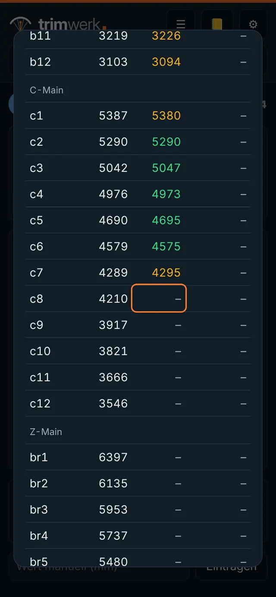
Übersicht: Soll, links, rechts
Messreihe sichern
Eine Messreihe ist ein kompletter Durchgang – z. B. „Eingang“, „nach Trimm“. Solange sie läuft, kannst du Werte ändern. Gesichert wird sie zum unveränderlichen Bericht.
📦 Sichern speichert alle aktuellen Werte samt Messzeit als gesicherte Messreihe. Bezeichnung und Messdatum vorher eintragen.
🆕 Neue Messreihe leert die Felder für eine Neuvermessung. Vorher fragt die App, was mit der laufenden Messung passieren soll:
Als Bericht sichern und neu beginnen – der Normalfall.
Verwerfen und neu beginnen – löscht die laufende Messung endgültig, z. B. nach einem Test (zur Sicherheit zweimal tippen).
Sind die Werte schon als Bericht gesichert (etwa weil du vorher 📦 Sichern getippt hast), wird nicht doppelt gesichert – die Felder werden nur geleert.
Die Messzeit zählt ab dem ersten Wert; Lücken über 5 Minuten gelten als Pause.
Gesicherte Messreihen findest du auf der Webseite unter Berichte.
Gesichert ist gesichert: Werte einer gesicherten Messreihe lassen sich nicht mehr ändern. Das macht Berichte für Käufer glaubwürdig.
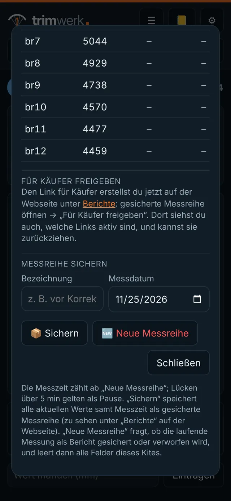
Unten in der Übersicht: Messreihe sichern
Einstellungen
Toleranz grün / gelb
Bis zu welcher Abweichung (mm) ein Wert grün bzw. gelb angezeigt wird; darüber rot. Voreinstellung 5 / 15 mm.
Laser-Offset
Abstand zwischen Messpunkt des Lasers und Anknüpfpunkt der Leine an der Zielscheibe. Wird von jeder Lasermessung abgezogen (Voreinstellung 18 mm).
Automatisch weiter
Nach jeder Messung zur nächsten Leine springen.
Vor dem Überschreiben fragen
Rückfrage, wenn ein neuer Wert stark vom vorhandenen abweicht (mehr als die Gelb-Toleranz) – schützt z. B. bei Tests vor versehentlichem Überschreiben.
Leine ansagen
Die App sagt die nächste Leine an (z. B. „a 1“) – praktisch, wenn du nicht aufs Handy schauen willst.
Kite-Skizze
Skizze über der Leinenanzeige ein- oder ausblenden.
Wind-Schnittstelle
Optional: Adresse und Passwort einer Schnittstelle, die Winddaten automatisch liefert. Ohne Eintrag lädst du Winddaten als Datei (siehe Winddaten).
✎ Ergänzen: Wie wird der Laser-Offset für eine eigene Zielscheibe ermittelt?
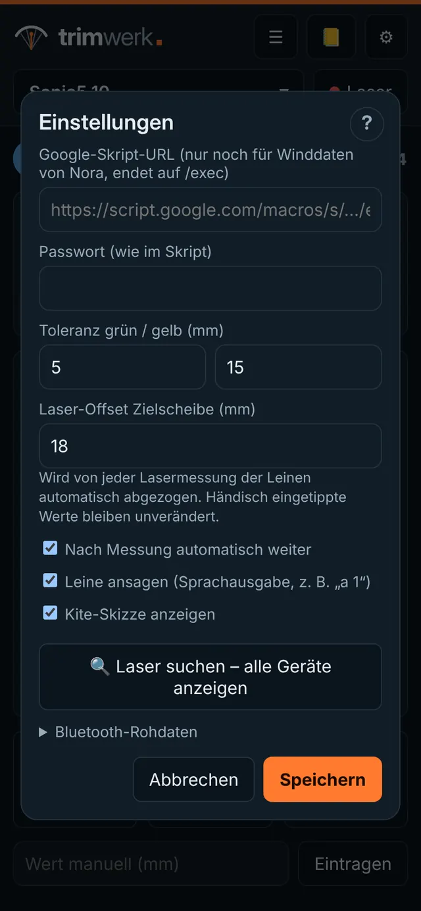
Einstellungen ⚙
3Logbuch
Was am Kite verändert wurde und wie er danach flog – das Gedächtnis zu jeder Messreihe. Öffnen mit 📒.
Trimm-Eintrag
Für alles, was beim Trimm gemessen oder verändert wird. Leere Felder sind kein Problem – trag ein, was du hast.
Last/Leine
Zug je Leine in kg während der Messung.
Versatz L / R
Längenunterschied zwischen Front- und Back-Main je Seite in mm; + = Front länger. Mit 📷 ein Foto dazu.
Seriennummer
Vom Etikett am Kite, optional mit Foto. Bleibt bei Freigaben an Freunde privat.
Vorrichtung / Methode
Womit und mit welcher Referenz gemessen wurde – wichtig, damit Messungen vergleichbar bleiben.
Performance Tuner
Stellung der Knotenleiter an der Z-Main links/rechts. Flysurfer-Standard: Mitte. Oben = Z ca. 20 mm länger, unten = ca. 20 mm kürzer (= Leinenplan).
Marker-Leinen
Einzelne Leinen je Ebene (z. B. a3, b3, c3, br5), die vor und nach dem Trimm gemessen werden.
Schlaufen, Pulleylines
Trimmschlaufen B/C und Pulleylines (unter Zug). Neuer Ersatzsatz: B 1190, C 990 mm – kürzer heißt geschrumpft.
Bar
Knoten an der Bar, Bar-Breite, Front- und Backline-Längen.
Ein Längenfeld antippen und dann am Laser messen – der Wert landet direkt im Feld. Ein angefangener Eintrag bleibt als Entwurf erhalten.
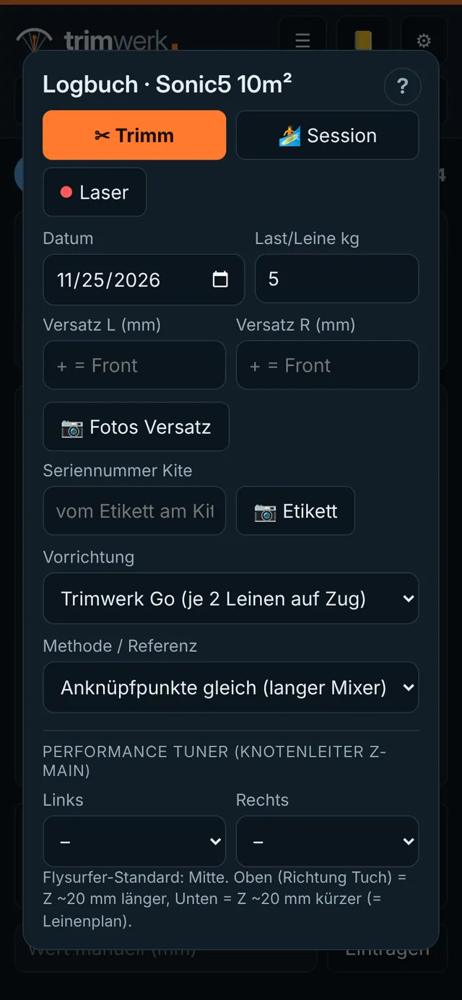
Logbuch · Trimm
Session-Eintrag
Für einen Tag auf dem Wasser oder am Land: Zeit, Material, Wind und wie es lief. So siehst du später, ob ein Trimm wirklich etwas gebracht hat.
Board / Stand / Bar und Knoten an der Bar.
Wind: Ø-Wind, Böen und Richtung direkt eintragen – oder mit 📄 Winddatei laden aus einer Datei deiner Wetterstation berechnen lassen (siehe Winddaten).
Ergebnis: Sprünge, Hangtime, Höhen – z. B. von Garmin/WOO – und eine Notiz zum Gefühl.
Session-Einträge bleiben immer privat, auch wenn du einen Kite mit Freunden teilst.
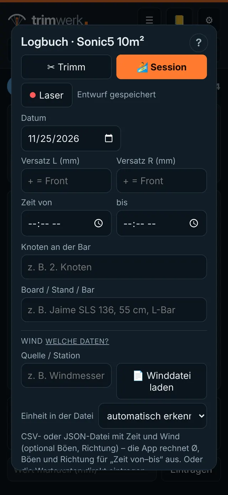
Logbuch · Session
Winddaten
Zu jeder Session gehören drei Windwerte: Ø-Wind, Böen und Richtung. Du kannst sie direkt eintragen oder aus einer Datei berechnen lassen – die App nimmt dann nur die Werte zwischen Zeit von und bis der Session.
So geht’s
Im Logbuch auf 🏄 Session, Datum und Zeit von/bis eintragen.
📄 Winddatei laden und die Datei wählen.
Die App trägt Ø-Wind, Böen und Richtung ein und zeigt darunter, wie viele Messwerte in der Session-Zeit lagen und welche Einheit sie erkannt hat.
Unter Quelle / Station notieren, woher die Daten stammen (z. B. „Windmesser Hafen“).
Welche Daten werden gebraucht?
Zeitpunkt (Pflicht)
Datum und Uhrzeit jedes Messwerts – in einer Spalte (2026-11-25 14:10, 25.11.2026 14:10, 2026-11-25T13:10Z, Unix-Zeit) oder getrennt in Datum und Uhrzeit. Nur Uhrzeit (14:10) geht auch, dann gilt das Session-Datum. Ohne Zeitzone wird Ortszeit angenommen; Angaben mit Z oder +01:00 werden umgerechnet.
Windgeschwindigkeit (Pflicht)
Mittelwind je Messintervall (typisch 1–10 Minuten). Daraus wird der Ø-Wind der Session.
Böen (empfohlen)
Spitzenwert je Intervall. Ins Logbuch kommt die höchste Böe der Session. Fehlt die Spalte, gilt der höchste Mittelwind.
Richtung (optional)
In Grad, woher der Wind kommt (0/360 = Nord, 90 = Ost, 180 = Süd, 270 = West). Gemittelt wird richtig über Nord hinweg (350° und 10° ergibt 0°).
Einheit
Knoten, m/s oder km/h. Steht die Einheit in der Spaltenüberschrift (Wind m/s, Böen (km/h)), erkennt die App sie selbst; sonst unter Einheit in der Datei wählen. Ins Logbuch kommt immer Knoten.
Zeitraum
Die Datei muss die Session-Zeit abdecken. Ein ganzer Tag oder eine ganze Woche ist kein Problem.
Dateiformate
CSV/TXT (Export aus Excel, Wetterstation, Windmesser-App): erste Zeile = Spaltennamen, Trennzeichen ;, , oder Tabulator, Dezimalkomma oder -punkt.
JSON: eine Liste von Einträgen mit denselben Angaben.
Woher bekomme ich solche Daten? Viele Wetterstationen, Windmesser und Wetter-Apps bieten einen CSV-Export der Messwerte. Staatliche Wetterdienste stellen Stationsdaten oft als CSV-Download bereit. Wichtig ist nur, dass Zeit und Wind enthalten sind.
Automatisch per Schnittstelle: Liefert eine Station ihre Daten über eine Adresse im Internet, lässt sich das als Wind-Schnittstelle einrichten (⚙ Einstellungen). Dann erscheint im Logbuch 🌬 Wind abrufen. Bei Interesse melden – das richten wir je Station ein.
4Meine Berichte
Alle gesicherten Messreihen als Bericht – einzeln, im Vergleich nebeneinander und auf Wunsch mit Freunden geteilt. Zu finden unter Berichte.
Die Liste
Links stehen deine Kites mit ihren Messreihen, darunter Kites, die andere mit dir geteilt haben („von …“). Mit Alle · Meine · Geteilt filtern, im Suchfeld nach Kite oder Name suchen.
Ein Tipp auf eine Messreihe öffnet den Bericht. Auch die laufende Messung erscheint – als Zwischenstand, noch nicht gesichert.
Jeder Bericht enthält: Kopfdaten (Datum, Zustand, Messpunkte, Messzeit), Kennzahlen, Ebenen-Übersicht, Abweichung je Leine, Symmetrie links/rechts, die Trimm-Einträge vom selben Tag und am Ende die komplette Messreihe mit Soll, links, rechts und den Abweichungen jeder Leine. Bei eigenen gesicherten Messreihen steht oben zusätzlich Für Käufer freigeben.
Als PDF speichern:⬇ PDF oben rechts im Bericht (auch im Vergleich und im Verlauf) öffnet das Drucken-Fenster des Browsers. Dort „Als PDF speichern“ wählen – oder direkt drucken. Das PDF ist hell und druckfreundlich, ohne Menü und Knöpfe; der Dateiname enthält Kite und Datum.
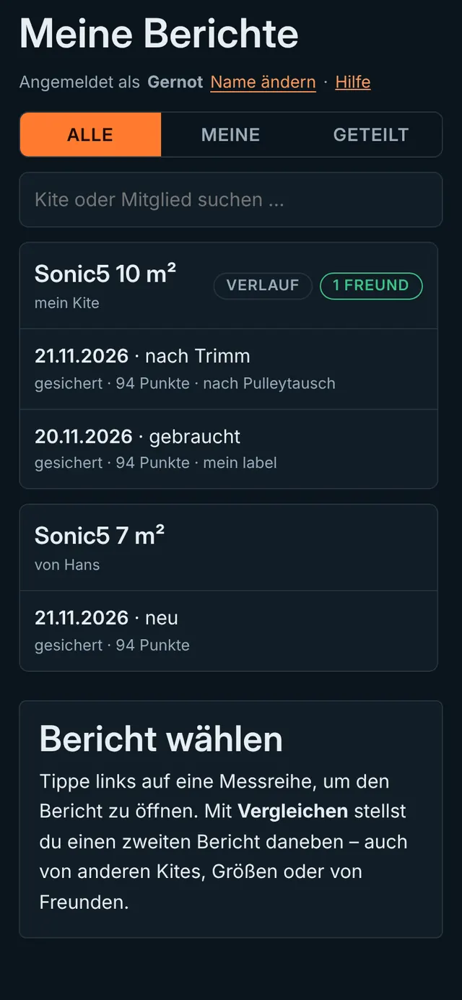
Eigene und geteilte Kites
Kennzahlen und Bewertung
Alle Werte sind Abweichungen vom Leinenplan: Ist − Soll in mm (siehe Plus, Minus, Soll).
Symmetrie
Anteil der Leinenpaare, bei denen links und rechts höchstens 5 mm auseinanderliegen. 100 % = perfekt symmetrisch.
Ebenenabgleich
Größter Abstand der B- oder C-Ebene zur A-Ebene (Mittelwerte). Klein = Profil wie vorgesehen.
Z links − rechts
Mittlere Seitendifferenz der Steuerebene. Ungleich lange Steuerleinen lassen den Kite in eine Richtung ziehen.
A-Ebene vs. Plan
Mittlere Abweichung der A-Ebene. Sie wird nicht getrimmt – ihre Verkürzung zeigt, wie stark die Leinen gealtert sind.
Streuung
Abstand zwischen kürzester und längster Leine einer Ebene (bezogen auf Soll).
Bewertung je Ebene nach größter Seitendifferenz bzw. Abstand zur A-Ebene: gut bis 5 mm, prüfen bis 10 mm, trimmen darüber.
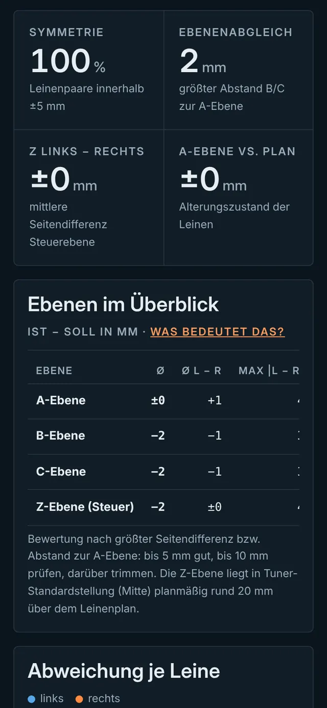
Kennzahlen und Ebenen
Berichte vergleichen
Im Vergleich stehen immer zwei Messreihen nebeneinander: A (blau) und B (orange). Das können zwei Messungen desselben Kites sein, zwei Größen, zwei Modelle oder dein Kite und der eines Freundes.
So geht’s
In der Liste auf eine Messreihe tippen – sie öffnet sich als Bericht und wird A.
Bei allen anderen Messreihen erscheint rechts Vergleichen. Bei der zweiten Messreihe antippen – sie wird B. Das geht auch bei einem anderen Kite oder einem geteilten Kite eines Freundes.
Oben erscheint die Vergleichstabelle, darunter beide Berichte vollständig nebeneinander (am Handy untereinander).
Die Vergleichstabelle lesen
Spalte A und B
Die Werte der beiden Messreihen, jeweils als Abweichung vom Leinenplan (Ist − Soll in mm) bzw. in Prozent.
Δ B − A
Der Unterschied: Wert von B minus Wert von A. Grün = B ist besser (näher am Plan, symmetrischer, kleinerer Abstand der Ebenen), rot = B ist schlechter. Ohne Farbe = praktisch gleich (unter 1 mm).
Obere Zeilen
Die vier Kennzahlen: Symmetrie, Ebenenabgleich, Z links − rechts, A-Ebene vs. Plan (siehe Kennzahlen).
Je Ebene
Für A, B, C und Z: Ø Ist − Soll, größte Seitendifferenz |L − R| und Streuung.
Alle Leinen vergleichen
Nur beim selben Kite: jede Leine einzeln mit Soll, Abweichung links/rechts von A und B und Δ des Mittelwerts – direkt unter der Tabelle. Zusätzlich steht am Ende jedes Berichts die komplette Messreihe, im Vergleich also beide nebeneinander.
Welche Reihe ist A, welche B? Am leichtesten zu lesen ist es, wenn A die ältere und B die neuere Messung ist – dann zeigt Δ, was sich seither verändert hat (grün = besser geworden). Falsch herum gewählt? A ⇄ B tauscht die Seiten.
Typische Vergleiche
Vor und nach dem Trimm
A = Messung „vor Trimm“, B = „nach Trimm“. Zeigt, ob der Trimm sein Ziel erreicht hat: Ebenenabgleich und Seitendifferenzen sollten deutlich kleiner (grün) sein. Die A-Ebene bleibt gleich – sie wird nicht getrimmt.
Derselbe Kite, mehrmals gemessen
Alle Messreihen stehen untereinander beim Kite, die neueste oben. Wähle die zwei, die dich interessieren – z. B. heute gegen den letzten Trimm, um zu sehen, wie viel sich seither verstellt hat. Für die Entwicklung über alle Messungen gibt es den Verlauf.
Gebrauchtkauf
Neuer Zustand bzw. Eingangsmessung gegen heute zeigt, wie stark die Leinen gealtert sind (A-Ebene) und ob ein Trimm fällig ist.
Andere Größe oder anderes Modell
Funktioniert auch, weil die Abweichung vom jeweiligen Leinenplan verglichen wird – nicht die Leinenlängen selbst. „Alle Leinen vergleichen“ gibt es dabei nicht, weil die Leinen nicht zusammenpassen.
Mit Freunden
Kites, die Freunde mit dir teilen, kannst du genauso als A oder B wählen – z. B. dein Sonic gegen den deines Freundes nach gleich vielen Saisons.
Gut zu wissen
Vergleich beenden zeigt wieder nur Bericht A. Ein Tipp auf eine andere Messreihe öffnet diese allein.
Bei B nochmals Im Vergleich antippen nimmt B wieder heraus; Vergleichen bei einer anderen Reihe ersetzt B.
Die Adresse im Browser enthält beide Messreihen – als Lesezeichen gespeichert, öffnet sich derselbe Vergleich wieder.
Verglichen werden immer zwei Reihen. Mehr als zwei auf einmal zeigt der Verlauf.
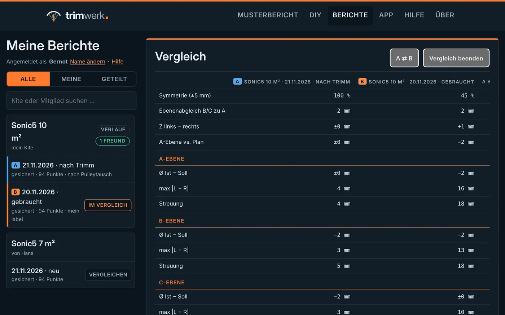
Vergleich am großen Bildschirm: oben die Tabelle mit Δ, darunter A und B nebeneinander
Verlauf eines Kites
Hat ein Kite mindestens zwei Messreihen, steht in der Liste beim Kite der Knopf Verlauf. Er zeigt die Entwicklung über alle Messreihen – so siehst du, wie schnell die Leinen altern und was jeder Trimm gebracht hat.
Veränderung: wie stark sich die A-Ebene seit der ersten Messung verkürzt hat, dazu Symmetrie, Ebenenabgleich und Z links − rechts heute im Vergleich zur ersten Messung.
Ebenen im Verlauf: Ø Ist − Soll jeder Ebene über die Zeit. Sinkt die A-Ebene, altern die Leinen; laufen B und C von A weg, verändert sich das Profil.
Symmetrie sowie Ebenenabgleich und Steuerebene über die Zeit.
Trimm-Markierungen: Orange gestrichelte Linien zeigen die Tage mit Trimm-Eintrag im Logbuch.
Tabelle aller Messreihen mit den wichtigsten Werten.
Ein Tipp auf einen Punkt im Diagramm oder auf Bericht in der Tabelle öffnet die jeweilige Messreihe. Den Verlauf gibt es auch für Kites, die Freunde mit dir teilen.
Mit Freunden teilen
Je mehr Kites gemessen sind, desto spannender werden Vergleiche. Darum kannst du deine Kites mit anderen Trimwerk-Mitgliedern teilen – pro Kite:
In der Liste beim Kite auf den Knopf rechts tippen (privat, 2 Freunde …).
Wählen: Privat, Freunde (bestimmte Mitglieder ankreuzen) oder Alle Mitglieder.
Speichern.
Geteilt werden nur gesicherte Messreihen und Trimm-Einträge. Privat bleiben Seriennummer, eigene Bezeichnungen, laufende Messungen und Session-Einträge. Freunde können nichts verändern.
Die Freigabe lässt sich jederzeit zurücknehmen – einfach wieder auf Privat stellen.
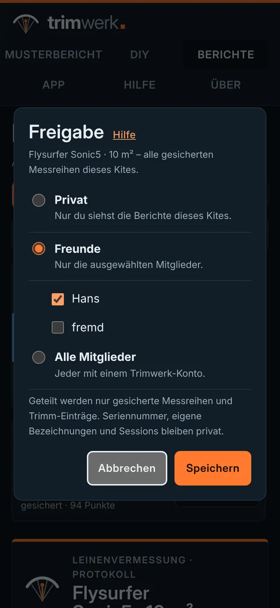
Freigabe je Kite
5Käufer-Freigabe
Beim Verkauf eines gebrauchten Kites zeigt ein Messbericht, in welchem Zustand die Leinen wirklich sind.
Auf der Webseite unter Berichte die gesicherte Messreihe öffnen.
Oben Für Käufer freigeben aufklappen, Zustand wählen (gebraucht, neu, nach Trimm) und 🔗 Link für Käufer erstellen.
Du bekommst einen Link und einen QR-Code – mit Teilen … direkt per Messenger oder E-Mail, oder Link kopieren.
Der Käufer braucht kein Konto. Er sieht nur diese eine Messreihe zum Lesen, neben dem Leinenplan – ohne deinen Namen.
Anonym für Vergleiche freigeben (Häkchen): Dann darf deine Messreihe ohne Namen als Vergleich bei Käufern desselben Modells erscheinen. Ohne Häkchen bleibt sie nur über deinen Link sichtbar.
Rechts neben der Überschrift siehst du, ob ein Link aktiv ist. Link zurückziehen (zweimal tippen) macht ihn sofort ungültig – z. B. nach dem Verkauf. Erstellst du später wieder einen Link, gilt die alte Adresse wieder.
Käufer-Freigabe und Freigabe an Freunde sind unabhängig voneinander: Der Käufer-Link zeigt genau eine Messreihe öffentlich, die Freunde-Freigabe zeigt angemeldeten Mitgliedern alle gesicherten Messreihen eines Kites.
6Konto und Kunden
Deine Angaben, Kites für Kundinnen und Kunden vermessen – für Kiteschulen, Shops und alle, die für andere trimmen.
Mein Konto
Unter Konto wählst du Privat oder Unternehmen und trägst Name und Adresse ein – das braucht es später für Rechnungen.
Unternehmen: Gib deine UID-Nummer ein (z. B. ATU12345678), speichere und tippe Prüfen. Trimwerk fragt das EU-System VIES und zeigt gültig samt Firmenname und Adresse laut VIES. Ohne UID (z. B. Kleinunternehmer oder Verein) gibt es später eine Rechnung mit Name und Adresse.
Name des Kunden, Kontaktdaten, Kite und Seriennummer eintragen.
Die beiden Fragen dem Kunden vorlesen oder zeigen und seine Antwort ankreuzen:
Trimwerk-Konto anlegen? Ja → Trimwerk legt mit seiner E-Mail ein kostenloses Konto an, der Kite und alle Berichte gehören ihm. Gibt es das Konto schon, kommt der Kite dorthin. Nein → der Kite bleibt vorerst bei dir.
Berichte für spätere Analysen und Vergleiche verwenden? Gilt nur für dich bzw. deinen Betrieb. Ja → du siehst die Berichte dieses Kites auch später. Nein → dein Zugriff endet mit „Auftrag abschließen“.
Mit Begrüßungs-E-Mail jetzt senden bekommt der Kunde einen Link, um sein Passwort festzulegen. Ohne E-Mail kann er später auf der Startseite „Konto aktivieren“ wählen.
In der App erscheint der Kite unter 🧰 Kundenkites als „Sonic5 10 m² · Name“. Messen, Logbuch und Sichern wie gewohnt.
Fertig? In der Kundenliste Auftrag abschließen.
Die Berichte gehören immer dem Kunden. Er sieht sie in seinem Konto unter „Berichte“, kann sie als PDF speichern, mit Freunden teilen oder einen Käufer-Link erstellen.
Als Kunde: Meine Werkstätten
Hat eine Kiteschule oder ein Shop deinen Kite vermessen, findest du sie unter Konto → Meine Werkstätten. Dort entscheidest du jederzeit:
Häkchen „Darf meine Berichte für spätere Analysen und Vergleiche verwenden“ entfernen → die Werkstatt verliert sofort den Zugriff auf alle deine Kites.
Zugriff entfernen → nur für einen einzelnen Kite.
Deine Berichte bleiben dabei immer bei dir.
7Downloads (3D-Druck)
Druckteile rund um Trimwerk – kostenlos für alle mit Konto, auch ohne gekaufte App.
Oben siehst du die 3D-Ansicht (ziehen = drehen, Mausrad oder zwei Finger = zoomen), Bilder aus der Konstruktion und Fotos vom fertigen Druck.
Unter Dateien mit Laden die STL oder 3MF holen und im Slicer öffnen (Bambu Studio, PrusaSlicer, Cura, OrcaSlicer …).
Die Einstellungen stehen unter So druckst du es: Material, Schichthöhe, Ausrichtung, Stützen.
Laser-Case: PETG gut trocknen, Schale mit der Öffnung nach oben, Leinenfang umgedreht (Auflagefläche zur Schale aufs Bett) – dann braucht keines der Teile Stützen. In der 3MF liegt beides schon druckfertig.
Eigenes Projekt hochladen
+ Eigenes Projekt hochladen tippen.
Titel, kurze Beschreibung und Druckanleitung eintragen – eine Zeile pro Punkt. Beginnt eine Zeile mit „Material:“, wird das Stichwort fett.
Druckdateien (STL, 3MF, STEP, PDF, ZIP, je bis 50 MB), Bilder aus dem CAD-Programm und Fotos vom Druck auswählen. Fehlt ein CAD-Bild, erzeugt Trimwerk zwei Vorschaubilder aus der STL.
Lizenz wählen und bestätigen, dass du die Dateien teilen darfst → Speichern & einreichen.
Bis zur Freigabe siehst nur du das Projekt (Filter Meine, Hinweis „Wartet auf Freigabe“). Nach der Prüfung erscheint es unter Community für alle Mitglieder. Änderst du später Text oder Dateien, wird es kurz erneut geprüft.
8Trimm-Grundlagen
Warum Foil-Kites sich mit der Zeit verstimmen und was die Zahlen in den Berichten bedeuten.
Warum trimmen?
Waageleinen verändern sich mit der Zeit: Sie schrumpfen oder längen sich, oft unterschiedlich je Ebene und Seite. Schon wenige Millimeter verschieben das Profil des Kites. Trimmen heißt: die Leinenlängen wieder auf den Leinenplan des Herstellers bringen – wie Ski wachsen oder das Fahrradservice.
Woran du merkst, dass es Zeit ist, steht auf der Über-Seite: wenn andere mit kleineren Kites mehr Höhe laufen, die Ohren klappern, die Front einfach wegbricht …
Ebenen A, B, C, Z
A-Ebene (a1, a2 …)
Vorderste Leinen an der Eintrittskante. Sie ist die Referenz und wird nicht getrimmt; ihre Verkürzung zeigt den Alterungszustand.
B- und C-Ebene
Mittlere Leinen. Ziel des Trimms: auf das Niveau der A-Ebene bringen und beide Seiten angleichen. Verstellt wird über Trimmschlaufen und Pulleylines.
Z-Ebene (br1, br2 …)
Steuer- bzw. Bremsleinen an der Hinterkante. In Tuner-Stellung Mitte liegt sie planmäßig rund 20 mm über dem Leinenplan.
Plus, Minus, Soll
Soll = Länge laut Leinenplan des Herstellers.
+ = Leine ist länger als der Plan, − = kürzer.
L − R = links minus rechts. Positiv heißt: die linke Leine ist länger.
Versatz Front/Back: + = Front-Main länger.
Entscheidend ist meist nicht der absolute Wert, sondern das Verhältnis der Ebenen zueinander und die Symmetrie links/rechts. Gleichmäßig gealterte Leinen sind darum meist weniger kritisch als einzelne Ebenen oder Seiten, die aus der Reihe tanzen.
Wann trimmen?
✎ Ergänzen: Deine Erfahrung – nach wie vielen Flugstunden messen? Welche Abweichungen spürst du im Flug? Welches Symptom passt zu welcher Ebene? Und wann lohnt sich ein neuer Leinensatz statt Trimmen?
Als Faustregel aus der Bewertung im Bericht: bis 5 mm passt, bis 10 mm im Auge behalten, darüber trimmen. Nach jedem Trimm eine neue Messreihe – dann zeigt der Vergleich, was es gebracht hat.
9Probleme lösen
Die häufigsten Stolpersteine und was hilft.
Der Laser wird nicht gefunden oder verbindet nicht
Bluetooth am Laser und am Handy eingeschaltet?
Ist der Laser noch mit der Bosch-App oder einem anderen Gerät verbunden? Dort trennen.
Richtiger Browser? Am iPhone nur mit Bluefy (siehe Passender Browser).
⚙ → Laser suchen – alle Geräte anzeigen versuchen.
Android: Der Browser braucht die Berechtigung für Geräte in der Nähe bzw. Standort.
Laser aus- und wieder einschalten, App neu laden.
Gemessen, aber der Wert kommt nicht an
Steht unten ⏳ … noch nicht gespeichert? Dann fehlt gerade die Verbindung. Die Werte bleiben auf dem Gerät und werden automatisch nachgereicht – App offen lassen, bis die Meldung verschwindet.
Punkt neben Laser grau statt grün? Verbindung zum Laser neu herstellen.
Ist die laufende Messreihe schon gesichert? Dann mit 🆕 Neue Messreihe weitermessen.
Anmeldung, alte Version, leere Liste
„Bitte neu anmelden“: Die Anmeldung ist abgelaufen – auf der Startseite neu anmelden; ungesendete Werte bleiben erhalten.
App sieht alt aus: App ganz schließen und neu öffnen.
Keine Berichte: Berichte entstehen erst, wenn eine Messreihe Werte hat; geteilte Kites erscheinen erst, wenn jemand sie für dich freigibt.
✎ Ergänzen: Probleme aus der Praxis – z. B. Laser misst die falsche Fläche, Werte springen, Akku, Messen bei Sonne.
10Begriffe von A bis Z
A-EbeneVorderste Waageleinen an der Eintrittskante; Referenz beim Trimm.
Back-MainHauptleine der hinteren Waage.
BerichtAuswertung einer gesicherten Messreihe mit Kennzahlen und Diagrammen.
EbenenabgleichGrößter Abstand der B/C-Ebene zur A-Ebene.
FreigabeErlaubnis, dass Freunde, alle Mitglieder oder ein Käufer einen Kite bzw. eine Messreihe sehen.
Front-MainHauptleine der vorderen Waage.
Laser-OffsetWird von jeder Lasermessung abgezogen, damit die Leinenlänge ab Anknüpfpunkt stimmt.
LeinenplanSollängen aller Waageleinen laut Hersteller.
Marker-LeineAusgewählte Leine je Ebene, die vor und nach dem Trimm gemessen wird.
MessreiheEin kompletter Messdurchgang eines Kites; laufend oder gesichert.
Performance TunerKnotenleiter an der Z-Main zum Verstellen der Steuerebene.
PulleylineLeine über Umlenkrollen in der Waage; schrumpft mit der Zeit.
SollLänge laut Leinenplan.
SymmetrieAnteil der Leinenpaare mit höchstens 5 mm Unterschied links/rechts.
TrimmschlaufeSchlaufe zum Verlängern oder Verkürzen einer Ebene.
TrimwerkGroße, stationäre Trimmvorrichtung: Alle vier Leinenebenen (A, B, C und Z) werden gleichzeitig unter Spannung gesetzt. Dabei nivellieren sich Front- und Back-Main automatisch, ebenso die B- und C-Ebene am Tuch (langer Mixer). So lassen sich der Versatz zwischen Front- und Back-Main und der Versatz der Ebenen A, B, C und Z zueinander am langen Mixer millimetergenau ablesen und trimmen.
Trimwerk GoMobile Trimmvorrichtung zum Nachbauen, passt in jedes Kitebag (siehe DIY).
VersatzLängenunterschied Front- zu Back-Main; + = Front länger.
Z-EbeneSteuerleinen an der Hinterkante (br1, br2 …).
✎ Bitte prüfen: Stimmen die Erklärungen zu Front-/Back-Main, Pulleyline und Trimmschlaufe? Fehlen Begriffe?
Fehlt etwas oder ist etwas unklar? Sag Bescheid – die Hilfe wächst mit euren Fragen.